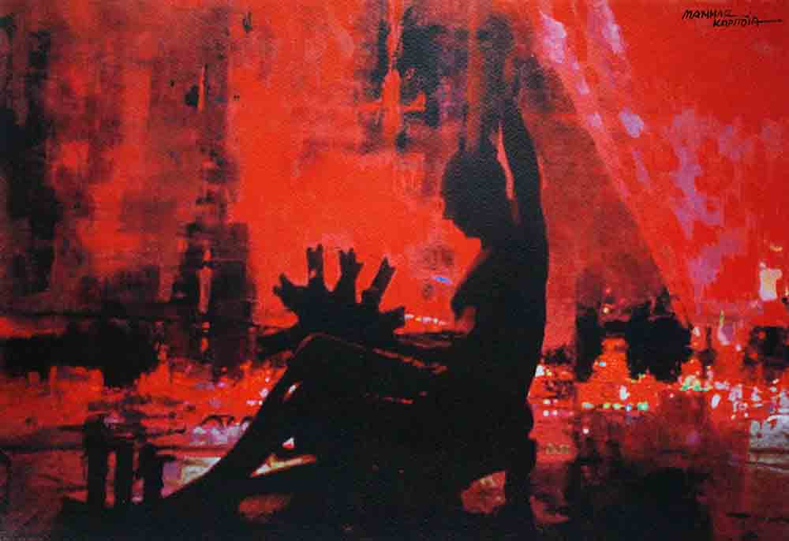
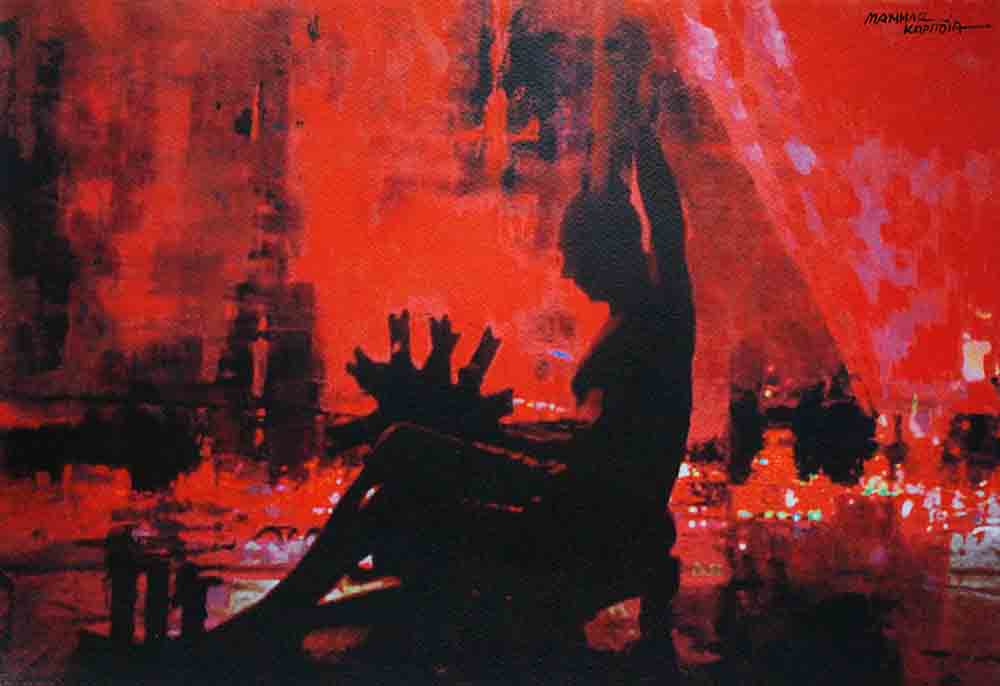
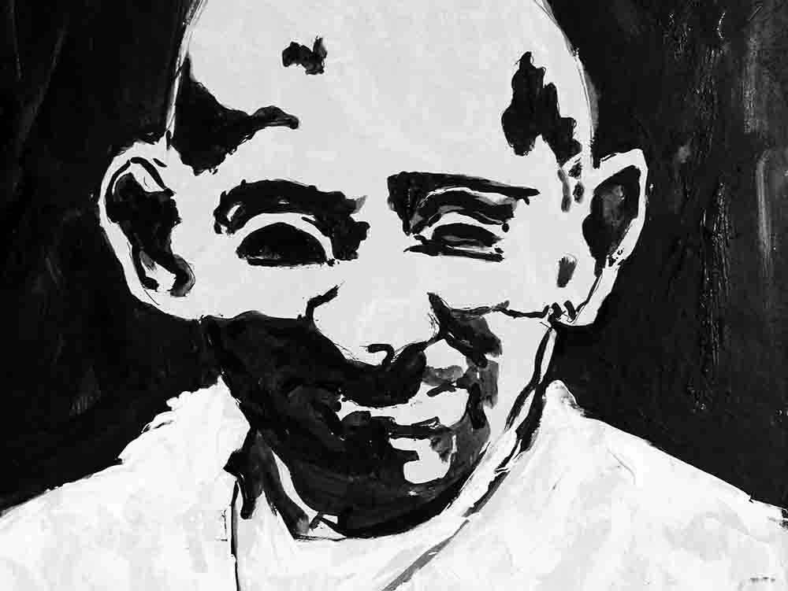
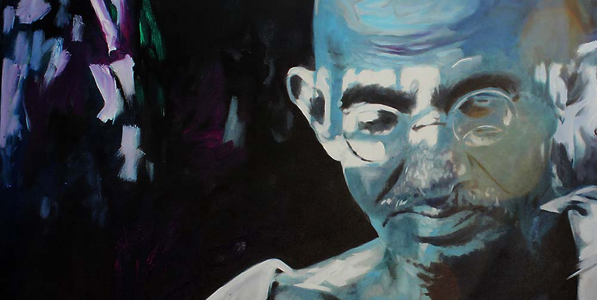
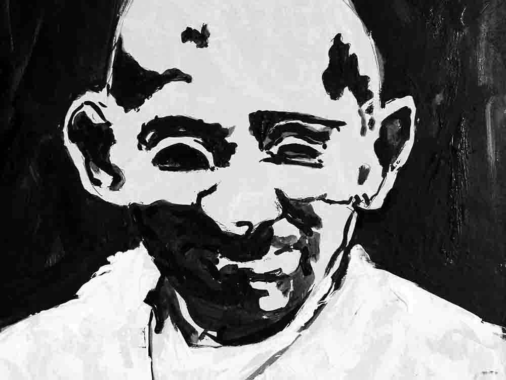
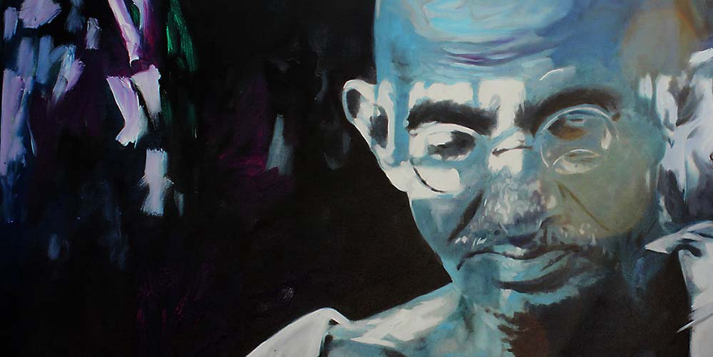

 



ONE MAN SHOW:
Contemporary Art Gallery, Ahmedabad-1998-99-2009 Gandhi Ashram, Ahmedabad-2007 Kamalnayan Bajaj Art Gallery, Mumbai-2007 Sardar Smarak Bhawan, Ahmedabad-2008 Kanchan Art Gallery, Jaipur-2009 'FROM THERE TO HERE' at Amdavad ni Gufa, Ahmadabad-2013 Heaven on Earth Spa & Art Gallery, Baroda-2013 'Inescapable' at Naman Art Gallery, Ahmedabad 2014 'P E R I G R I N A T I O N' at Amdavad ni Gufa, Ahmadabad-2016 'GANDHI - a journy within' at Jehangir Art Gallery, Mumbai-2016GROUP SHOW:
Sheth C.N. College of Fine Art, Ahmedabad-1984-85,2007-08-09-10-11-12-13-14 Hutheesing Visual Art Centre, Ahmedabad-2002-03-07-12. Hutheesing Vadi-2004 Archer Art Gallery, Ahmedabad-2003-04. Karnavati Art Gallery, Ahmedabad-2003-04-05-06-07-08-09-10-11-12-13-14-15 Heritage Week, Ahmedabad-2003 Contemporary Art Gallery, Ahmedabad -2000-01-08-09. "30 BELOW 40",Ravishankar Rawal Kala Bhavan, Ahmedabad,-2000 Marvel Art Gallery, Ahmedabad- 2004-05 The Nexus Art Show, Amdavad Ni Gufa,The Times Of India (AM)-2010 2nd October (Celebration VICHAR TRUST,Vishala),Ahmedabad-2010-11-12-15. '150 Years Income Tax ",Ravishankar Rawal Kala Bhavan,Ahmedabad-2010. Kanoria Centre For Arts, Ahmedabad-2011. Amdavad Ni Gufa,Ahmedabad-2012 Two Man Show M.S University,Baroda-2007 "Pratyayana Ahmedabad" Sarjan Art Gallery Baroda-2004 "Grave in the ocean", Sarjan Art Galley Baroda-2005 Dream Art Gallery-2009-10 Gujarat Visual Artist Association Org., Jahangir Art Gallery,Mumbai-2006 "Save in Water" , Cymroza Art Gallery, Mumbai-2006 Artist Centre Mumbai-2002-07-08-2013 "Art Horizon Gujarat", Nehru Centre, Mumbai-2002 "Art Fusion Show" Nehru Centre, Mumbai-2010 "Life is Water" Bajaj Art Gallery, Mumbai-2006 "Contemporary Colour Mystery", Indor-2010 "10 Thoughts" , Bangalore-2010 "All Indian Contemporary Artist, Gowati -2011 "Abhivaktyan", Jaipur-2011 Contemporary Indian Artist, Lucknow-2011 "Artist of Gujarat", Swarajvidhi Ravindrabhawan Parisar, Bhopal-2012 "Affordable Art" presented by Sarjan Art Gallery, Baroda. -2013 Group Show at Dilkhush Art Gallery, Ahmedabad-2014 Group Show presented by Gallery Naman, Ahmedabad-2014 Group Show presented by Surya Art Gallery, Navi Mumbai-2014 Group Show at Artists' Centre, Mumbai -2014 Group Show All India Art Exhibition Vallabh Vidhyanagar-2015 A.M. (Times Of India) Group Show Ahmadabad ni Gufa-2015 "Rickshaw Show" Karma Art Gallery-2015 Samara Art Gallery, Ahmedabad-2016CAMPS:
Participated in many national art camps including, West Zone Culture, All India Artists Camp, Goa, 2012 Gujarat State Lalit Kala Academy, Artists Camp, Dwarka, 2012 All India Artists Camp, Vallabh Vidhyanagar-2013 All India Artists Camp, Songardh (Bhavnagar)-2014 Portrait demonstrations in many schools, fine arts colleges and many corporate art camps. Also a part of Jury committee in Youth Festival organized by Gujarat University since last fifteen years Jury member in All India Art Exhibition, New Delhi-2014 (NDMC)
WRITE UPS:
Written ten years daily news papers in Artist column. Written art related books. • 'Gujrat Na Kalakaro' • 'Shree Yagneshwar Shukla' • 'Shree Somalal Shah'.
AT PRESENT:
Asst. Lecturer in Painting Department at Sheth C.N. College of Fine Arts, Ambawadi, Ahmedabad – 380 006.